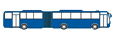

Transporte Activo
Transporte Activo
Información y participación ciudadana para el sistema de transporte Masivo Integrado de Occidente, MIO de la ciudad de Santiago de Cali.
Convenciones
Tipos de Bus
-

Articulado
Buses con rutas expresas (E) y troncales (T).
Se detienen únicamente en estaciones. -

Padrón
Buses con rutas padronas (P).
Se detienen en estaciones y paradas de calle. -
Alimentador
Buses con rutas auxiliares (A).
Se detienen únicamente en paradas de calle.
Tipos de Parada
-
Troncales
Estaciones donde se detienen buses articulados y padrones.
-
Pretroncal
Paradas de calle donde se detienen buses padrones y alimentadores.
-
Auxiliar
Paradas de calle donde se detienen únicamente buses alimentadores.